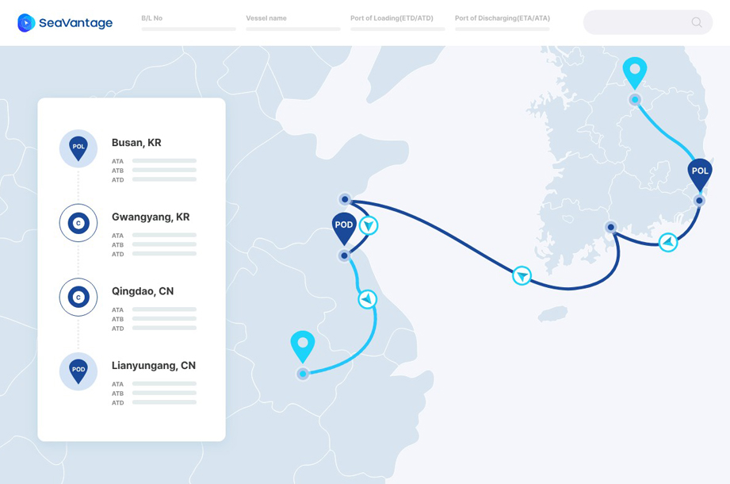
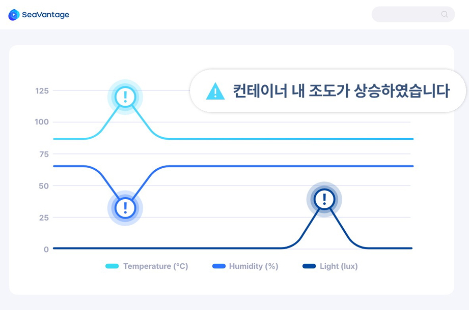
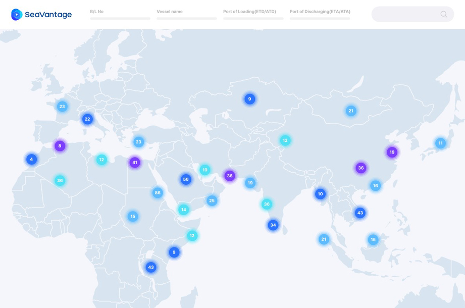
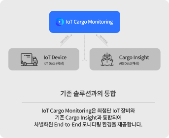
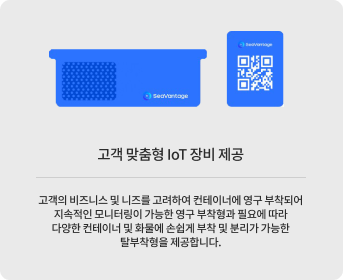

아직도
고객 클레임에
속수무책이신가요?
IoT 기반 실시간 화물 모니터링으로
온·습도,
도어 개폐 여부 등에 대한 화물의 상태를
실시간으로 모니터링하세요.
화물 위치 및 상태는
한눈에 확인되고,
한 곳에서 관리되어야 합니다
-

육상부터 해상까지
한눈에 보이는
내 화물의 위치해상에서의 AIS를 통한 실시간 화물 추적과 육상에서의
IoT 기반추적 기술을 사용하여, 플랫폼 내에서 컨테이너 단위로
모든 End-to-End 구간의 위치를 한눈에 파악할 수 있습니다. -

공급망에서 일어나는
모든 이벤트를
실시간으로 모니터링IoT 센서를 통한 온·습도, 도어 개폐 등 다양한 변수를
모니터링할 수 있습니다. 예상치 못한 변수 발생 시
신속한 대응을 위한 알림 서비스를 제공하여,
화물의 품질과 보안을 향상시킬 수 있습니다. -

한눈에 보이는 지도에서
보유 자산 및
이동 현황 확인화물 이동 현황부터 얼마나 화물을 보유하고 있는지M
지도를 통해서 한눈에 확인할 수 있습니다.
보유 자산 및 이동 현황 파악으로 물류 계획 수립이 쉬워집니다.
독보적인 기술력에
제품력을 더했습니다
해당 IoT 장비는 RoHs, WEEE, UN38.3 등 국제 표준에
부합하여 해상 및 육상 운송에 있어 안전성이 검증되었습니다.
- 
- 
다양한 비즈니스 환경에서
IoT 기반 실시간
화물 모니터링을 적용하세요

선사 및 물류사컨테이너 자산 관리가 필요한 선사 및 물류사는 공급망
가시성과
통제력을 확보하여 적절한 물류 프로세스를 수립할 수
있습니다.